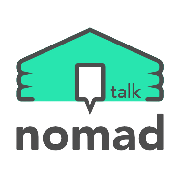

nomad talk танилцуулга
(소개)
- nomad talk нь Гадаад улсад ажиллаж амьдарч буй Монголчуудад зориулсан программ юм.
nomad talk нь гадаад улсад ажиллаж амьдарч буй Монголчуудад зориулсан сайн бөгөөд бүрэн төхөөрөмжийг бий болгох зорилготой бүтээгдсэн билээ .
nomad talk нь харилцан яриаг автоматаар орчуулах мөн мэдээ мэдээллийн сүлжээ сувгуудыг үүсгэх боломжтой.
nomad talk-оор гадаад улсад ажиллаж амьдарч буй хүмүүс тулгамдаж буй асуудал мөн хэрэгцээд мэдээлэл хуваалцах, ажил олох/ ажил хайх зэрэг зүйлсийг хуваалцвал ямар вэ.
Солонгосд Монгол хүнийг ажилд авмаар байна уу? nomad talk-ажилд авах сувагт Солонгос хэлээр ажил олгох зараа оруулаарай.
Солонгост ажилд ормоор байна уу?nomad talk-оос ажлын сувгаар хайж үзээрэй.
ажил хайж мөн ажилд авахад хэлний асуудал тулгарч байна уу? nomad talk нь харилцан яриаг автоматаар орчуулга хийж өгөх болно. битгий санаа зовоорой.
nomad talk доторх сувгуудаар олон төрлийн мэдээ мэдээлэл хуваалцан харилцаж найзуудтай болоорой .
nomad talk нь ажил хайх болон ажилд авах сувгийг үүсгэх боломжтой юм.Солонгос хэл дээр бичигдсэн ажлын зар ч Монгол хэл рүү орчуулагдах болно
nomad talk нь гадаад хүмүүс болон Монгол хүмүүсийн хооронд мэдээ мэдээллийг хуваалцахад туслах үүргийг гүйцэтгэдэг мэссэнжр байхыг хүсэж байна.
nomad talk нь facebook-хаягаар нэвтрэх болон бүртгүүлэх боломжтой юм.
nomad talk-г нь Монгол хэл болон Солонгос хэлээр харилцах боломжтой эхэлж байгаа боловч илүү олон хэлээр орчуулга хийх боломжтойгоор өргөтгөх болно.
nomad talk нь нэмэлт үйлдлүүдийг оруулах тал дээр нээлттэй байх болно.
nomad talk-ын хэрэглэгч та бүхэн бусдад манай мэссэнжрийг танилцуулан хэрэглэгч нэмэгдэх бүрт бид бага багаар урагшилж хэрэглэгчдийн санал хүсэлтийг хүлээн аван засаж шинэчлэгдэн nomad talk программыг өргөжүүлэх болно.
nomad talk нь хувийн мэдээллийг огт (facebook email)-ыг ч 3дахь итгээдэд хуваалцахгүй болно.
nomad talk нь гадаадад амьдарч ажиллаж буй Монголчуудад зайлшгүй хэрэгтэй программ болохыг хүсэж байна.!!!
- nomad talk 은 외국에서 생활하시는 몽골인들을 위한 매신저 커뮤니티 앱이에요.
nomad talk 은 외국에서 생활하시는 몽골인들을 위해 제대로 된 매신저 커뮤니티 서비스 해보고자 만든 앱 입니다.
nomad talk 은 대화 내용을 자동 번역 해주는 매신저 기능과 커뮤니티 채널 기능을 제공 합니다.
nomad talk 에서 다른 문화권에서 생활하는 고충을 서로 나누기도 하고 생활에 필요한 구인구직, 중고차, 부동산, 교육 정보를 검색하거나 공유할 수 있으면 어떨까요.
한국에서 몽골인을 구인하고 싶으세요? nomad talk 구인 채널에 한국어로 구인 정보를 등록하세요.
한국에서 구직을 원하세요? nomad talk 에 등록 된 구인 채널들을 검색 해 보세요.
언어 때문에 구인구직이 힘드세요? nomad talk 은 몽골어와 한국어를 채팅방에서 원하는 언어로 자동번역 해 줍니다. 걱정하지 마세요.
nomad talk 안에서 커뮤니티 체널을 통해 다양한 주제로 대화를 나누고 정보를 공유하고 친구를 만들어 보세요.
nomad talk 에는 구인구직 채널을 생성할 수 있습니다. 몽골어를 모르는 구인 회사도 구인 채널에 구인 내용을 등록하면 자동으로 몽골어로 번역되어 채널이 생성 됩니다.
nomad talk 은 외국인과 몽골인 사이에서 정보의 공유나 대화의 중간 역할을 할 수 있는 매신저 였으면 좋겠습니다.
nomad talk 은 페이스북 로그인으로 회원 가입을 하실 수 있습니다.
nomad talk 의 지원 언어는 몽골어, 한국어로 서비스를 시작하지만 차근차근 번역 지원 언어를 추가해 나가도록 하겠습니다.
nomad talk 은 아직 어떤 기능을 더 담을지 정해 놓지 않았습니다.
nomad talk 이 여러분들께 조금씩 알려지고 활성화 되면 현재보다 더 나은 기능과 서비스를 위해 최대한 열린 생각으로 사용하시는 분들의 의견을 차근차근 nomad talk 앱 기능에 반영 해 나가려고 합니다.
nomad talk 은 절대로 개인정보(facebook email)를 제3자에게 제공하지 않습니다.
nomad talk 은 외국에서 생활하시는 몽골인 분들을 위해 꼭 필요한 매신저 커뮤니티 앱이 되어 가고 싶습니다.!!!
- nomad talk нь одоохондоо бүрэн төгс мэссэнжр биш билээ.
많은 "Од" дарж биднийг дэмжих юм бол цаашдаа илүү хичээж урагшлах болно.
: email - cs.nomadtalk@gamil.com
- nomad talk 은 아직 완성된 매신저 커뮤니티 앱이 아닙니다.
많은 리뷰 남겨 주시면 계속해서 수정하고 업데이트 해 나가겠습니다.
: email - cs.nomadtalk@gamil.com
- nomad talk-г суулгахад дараах зүйлс шаардагдана.
хадгалах зай : nomad talk программ нь зураг хэрэглэх болон хадгалахын тулд хэрэгтэй .
Камер : nomad talk дотор өөрийн нүүр хуудас зураг солих болон зураг явуулах зураг авахад хэрэгтэй.
- nomad talk 은 설치기기에 다음과 같은 접근권한이 필요합니다.
저장공간 : nomad talk 앱이 사진파일을 사용하거나 저장하기 위해 필요해요.
카메라 : nomad talk 에서 내 프로필 사진을 변경하거나 채팅방에서 사진을 공유하기 위해 카메라를 사용하시려면 필요해요.
- nomad talk төгсгөлд нь.
МСЁЗ-н " өвсөр залуучуудыг цахим гэмт хэргээс хамгаалах"хуулийн дагуу программ доторх хориглогдох зүйлсийг хориглох ба өсвөр залуучуудыг гэмт хэргээс урьдчилан сэргийлэхийн төлөө анхаарч ажиллах болно.
Ёс зүйн дутагдалтай мэдээ мэдээллийг оруулахгүй байхад анхаарах ба хэрвээ мэдээллийн сувгуудаар тийм зүйлс оруулсан тохиолдолд бүх хэрэглэгч МСЁЗ-н асуудлаар мэдэгдэх боломжтойгоор хийсэн болно. .
ёс зүйн дутагдалтай мэдээллийг оруулсан хэрэглэгчийг автоматаар программаас гаргах болно.
садар самууныг сурталчилсан нүүр хуудас зураг болон садар самуун бичлэг нь энэхүү программд хориотой болохыг анхаарна уу.
программд хууль бус үйл ажиллагаа болон үйлдэл гаргахыг хориглоно. хэрвээ хууль бус зүйлсийг харсан болон мэдсэн тохиолдолд зохион бүтээгчийн имэйл хаяг руу мэдэгдэж өгнө үү.
- nomad talk 은 마지막으로.
방심위의 '청소년 보호 활동 강화 권고안'을 따라 앱 내에서 금지해야 할 사항은 금지하고 청소년 보호를 위한 모니터링을 위해 최선을 다하겠습니다.
유해한 내용의 정보가 앱 내에서 소개되지 않도록 노력하고 발견시 모든 회원님들이 신고하실 수 있는 자정장치도 마련 하겠습니다.
유해한 내용의 정보를 노출시킨 회원님은 강제 탈퇴 및 영구 정지 될 수 있음을 알려 드립니다.
음란하거나 선정적인 프로필 사진 및 성행위를 연상 시키는 불건전 컨텐츠는 본 서비스에서 금지합니다.
앱 내에서 불법적인 컨텐츠 및 행위를 발견시 개발자 연락처 이메일로 신고 부탁 드려요.